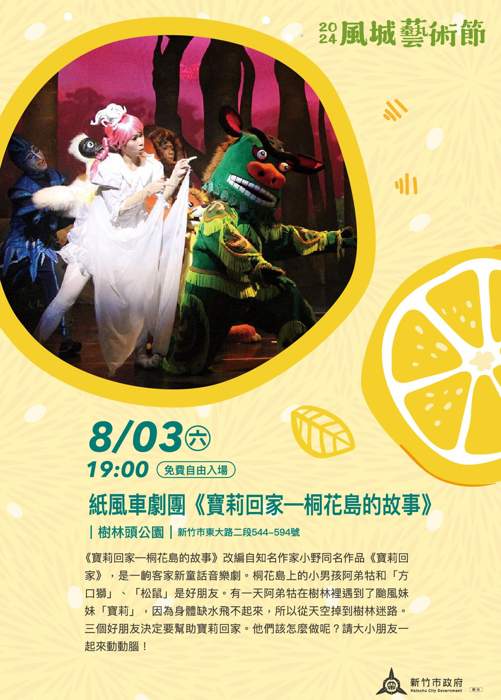

《桐花岛的故事》
剧情简介
《桐花岛的故事》是由纸风车剧团制作的客家儿童音乐剧，改编自作家小野的作品《宝莉回家》，并融入客家传统节日“天穿日”的传说16。该剧以生动活泼的歌舞、互动式表演和客语元素，讲述了一个关于环保、勇气与团结的奇幻故事。
水神和火神彼此间的战争,让桐花岛历经早灾和水灾,最后把天烧出一个破洞，最后由女娲补天才能解决问题……
该剧透过戏剧与寓言展现环境保护的命题，也让小朋友了解客家文化外，也了解环境生态保护的重要性。
《桐花岛的故事》是由纸风车剧团制作的客家儿童音乐剧，改编自作家小野的作品《宝莉回家》，并融入客家传统节日“天穿日”的传说16。该剧以生动活泼的歌舞、互动式表演和客语元素，讲述了一个关于环保、勇气与团结的奇幻故事。
水神和火神彼此间的战争,让桐花岛历经早灾和水灾,最后把天烧出一个破洞，最后由女娲补天才能解决问题……
该剧透过戏剧与寓言展现环境保护的命题，也让小朋友了解客家文化外，也了解环境生态保护的重要性。